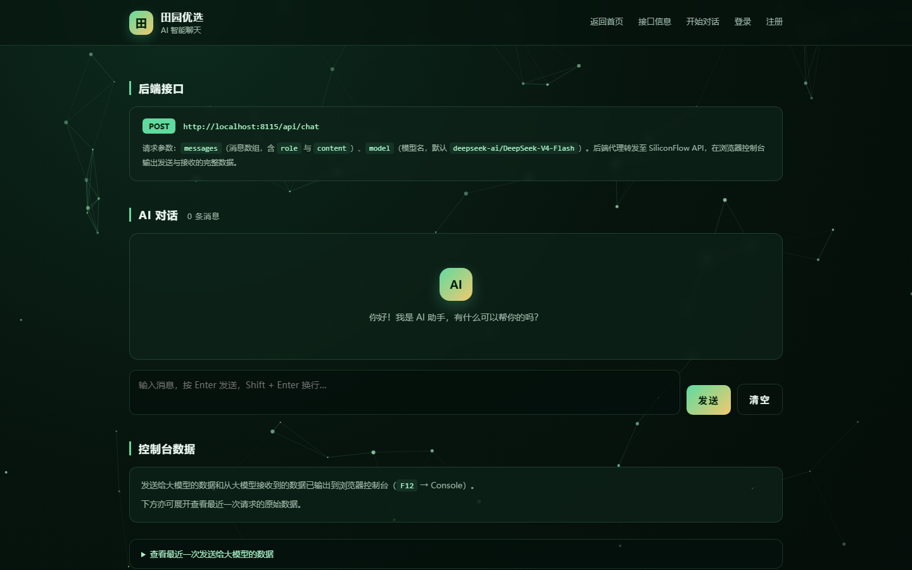

前台功能 · 04
AI 智能聊天
与后端大模型接口进行多轮对话，支持流式输出、清空会话与错误提示，消息按角色区分展示。
chat.html

页面说明
聊天页把用户输入发送到后端，后端代理大模型接口并按流式返回内容；前端逐段追加到当前气泡中，形成打字机效果。
对话按用户与助手两种角色渲染，发送中会禁用输入并展示等待状态，接口异常时给出明确提示，避免用户误以为消息已发送。
功能要点
- 多轮对话：保留上下文消息列表
- 流式输出：逐段渲染模型返回内容
- 角色区分：用户与助手气泡样式不同
- 异常提示：网络或模型错误可见
- 清空会话：一键重置对话
接口说明
| 方法 | 接口路径 | 说明 |
|---|---|---|
| POST | /api/chat |
发送消息并代理大模型生成回复，支持流式返回 |
相关文件
chat.html
js/chat.js
backend/routes/chat.js